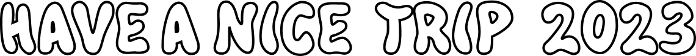

tim walker
RENEWAL DESIGN
다양한 세트와 소품, 개성 넘치는 모델을 통해 자신만의 독창적인 세계를 구현해내는 영국 패션사진가 팀 워커는 세계에서
가장 창의적인 사진가 중 한 명이다. 그를 사진작가로써 알리게 된 Vogue, AnOther, i-D, LOVE 등 패션잡지에서 영감을 얻어
패션잡지와 같은 레이아웃으로 동적 움직임을 담아 웹을 구현했습니다.
keyword
#fantasy#magazine#modern
TARGET
사진을 좋아하는 사람
feat. 팀워커 덕후
시각적 상상력을 자극하는 유명한 팀워커의
사진과 그의 전시, 화보집에 대한
정보를 얻고자 하는 사람
Design Concept
패션매거진
팀워커는 패션화보로 세계에 이름을 알렸기에 패션매거진은 팀워커를 직관적으로 인식할 수 있는 상징이라고 생각합니다. 이미지와 타이포를 강조한 디자인으로 웹을 매거진처럼 구성하여 그의 사진을 강조하고 그의 사진에서 느껴지는 느낌을 강렬하게 전달하고자 했습니다.
JavaScript
jQuery
CSS
잡지형식의 디자인을 최대한 살리기 위해 타이포와 사진으로 심플하게 구성하고 화려하고 환상적인 팀워커의 사진을 살리기위해 무채색 계열의 색상을 사용했습니다. 자바스크립트 구현 상황을 최소화하기위해 CSS로 할 수 있는 요소를 분석하여 우선작업을 진행했습니다.
01
글자 이벤트
jQuery
GSAP 웹 애니메이션
스크롤트리거를 사용하여 특정위치도달시
숨겨져 있던 글자가 올라오는 이벤트
글자가 많은 시안을 단조롭지 않도록
글자에 움직임을 적용
02
홈 메인배너
스크롤 이벤트
jQuery
스크롤할 때마다 실행되는 함수 작성
스크롤 down 영상확대 / up 영상 축소!
$(window).scroll(function () {
const scroll = $(window).scrollTop();
$("#mov01").css({
width: 100 + scroll / 12 + "%"});
});
스크롤 이벤트가 발생할 때마다 scroll 함수가 호출되며, scrollTop을 사용하여 현재 스크롤 위치를 계산하고 해당 위치에 따라 요소의 너비를 조정하는 함수를 작성하여 scroll 변수에 할당합니다.
영상 요소의 CSS 속성을 변경하기 위해 css() 메소드를 작성하여, width 속성을 조정하여 요소의 너비를 변경합니다. 너비는 100 + scroll / 12 + "%"로 설정되며, 스크롤 위치에 따라 동적으로 변경됩니다.
03
스크롤시
배경, 글자색상 변화
jQuery
스크롤하여 특정위치 도착시 실행
addClass, removeClass로 미리 설정해둔
active값을 실행하여 body영역의 색상변경
$(window).on('scroll', () => {
const slideBox = $('.m-banner').offset().top + 100;
if (scrollY > slideBox) {
$('body').addClass('active');
} else {
$('body').removeClass('active');
}
});
사용자의 스크롤 위치에 따라 body 요소에 클래스를 추가하거나 제거하는 코드입니다.
'm-banner' 클래스를 가진 요소의 문서 상단으로부터의 오프셋을 계산하고 100 픽셀을 더한 결과를 slideBox 변수에 저장한 함수를 사용하여, 스크롤 위치가 계산된 오프셋보다 크면 'active' 클래스를 추가하고, 작으면 'active' 클래스를 제거하여 웹페이지의 배경과 글자 색상을 변경합니다.
04
스크롤에 따라
슬라이더 높이 변화
JavaScript
ScrollTrigger 플러그인 사용
스크롤 위치에 따라 각각의 슬라이더들의 크기와
높이 조절하여 접혀져있다가 펴지는 효과 구현
05
about 페이지
svg 라인
스크롤 이벤트
JavaScript
스크롤 이벤트가 발생할 때마다 scrolled 함수가 호출되면서 svg 경로 애니매이션이 구현
svg 이미지를 원하는 만큼 보여줄 수 있도록 strokeDasharray, strokeDashoffset을 사용
Style Guide
Logo
민트 페이퍼의 로고 / HAVE A NICE TRIP 2023 “HAVE A NICE TRIP 2023”의 로고는 일러스트로 라인을 따서 일러스트와의 통일성을 유지시켜 주었습니다.
Color Palette
민트페이퍼의 대표 컬러인 민트와 여름에 어울리는 트로피컬 컬러로 한여름의 무드를 표현했습니다.
Typography
POPPINS
S-CORE DREAM
일러스트로 그린 서체
Project Results
다양한 움직임에 대한 흥미가 커서 팀으로 작업하는 만큼 혼자서 작업하기엔 부담스러운 움직임이 들어있는 웹을 선정했습니다.다소 움직임 무거워 보이는 프로젝트이지만 중점으로 생각했던 중요한 움직임을 모두 구동했습니다.
리뉴얼 진행과정
웹 선정 및 분석 > 컨셉 결정 > 디자인 작업 진행 > 퍼블리싱 가이드라인 작성 > 퍼블리싱 > 움직임제어 > 오류수정
Bad

레퍼런스 사이트를 완전 동일하게 구현하지 못한 점
-
움직임의 디테일 완성도가 부족. 홈을 3명이 나눠서 작업하고 연결하는 과정에서 구조 가 틀어지고 생각지도 못한 움직임의 변화가 생기고움직임도 원하는 대로 제어가 되지 않았다.
Good

톤 앤 매너에 맞는 컬러, 일러스트, 웹 디자인
-
목표한 웹 움직임 구현
-
분업화된 효율적인 프로젝트 진행
-
팀원들간 서로 배려하며 프로젝트 완료
WEB PUBLISHING
“Have a nice trip 2023”
인디밴드 공연기획사 민트페이퍼의 여행테마 페스티벌 공연정보를 담은 웹입니다. 보는 이로 하여금 시끌벅적한 여름 페스티벌에 대한 느낌을 전달하는 것을 목적으로 일러스트와 웹의 동적 구현을 통해 페스티벌의 즐거움을 담았습니다.
PROJECT팀 프로젝트 / JavaScript
작업일정2023.06.30 ~ 2023.07.10
KEYWORD#DYNAMIC #HOT SUMMER #FESTIVAL
- Skills
- HTML5 / CSS3 / JavaScript & jQuery
- GIT & GITHUB / ILLUSTRATION / GIF / SVG / Video
- Tools
-